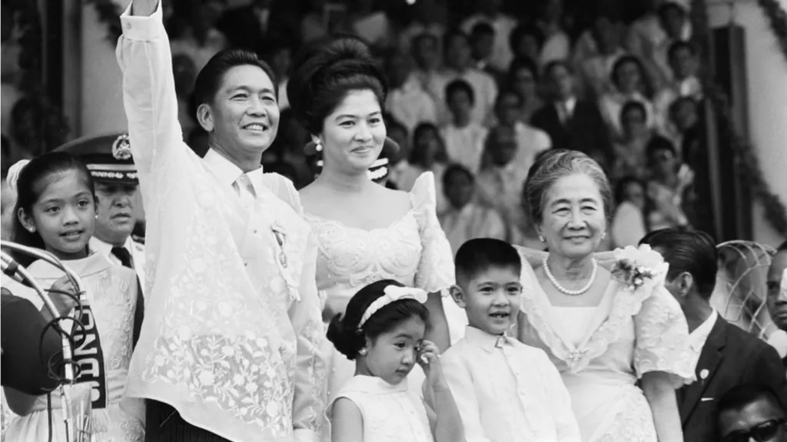
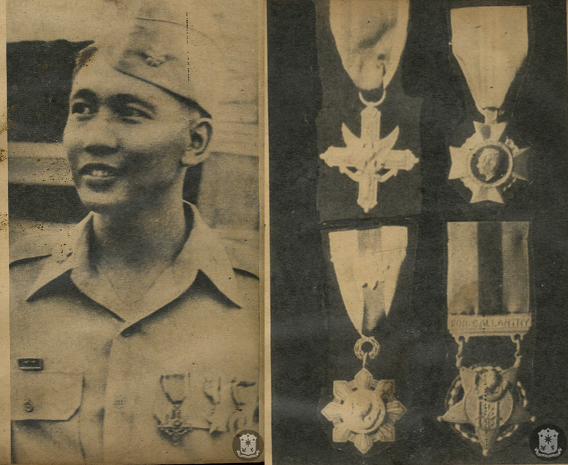
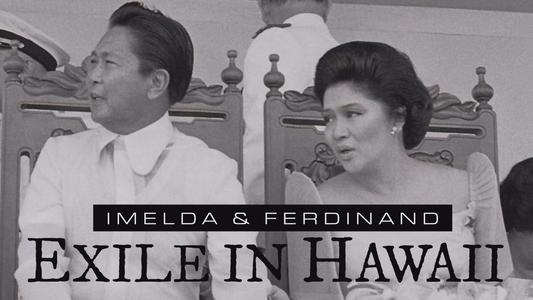
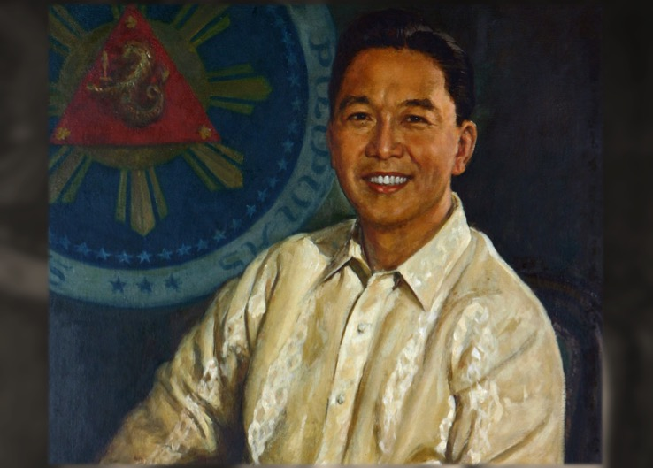

Documentation Center
This section is dedicated to providing information about former President Ferdinand Marcos' life and legacy.

Archival materials from the Marcos era (1965-1986)Browse by Category
Early Life
Ferdinand Emmanuel Edralin Marcos Sr. was born on September 11, 1917, in the town of Sarrat, Ilocos Norte, Philippines. He was the seventh of eleven children of Mariano Marcos and Josefa Edralin. His father, Mariano Marcos, was a politician who served as a congressman and later as governor of Ilocos Norte, while his mother, Josefa Edralin, came from a prominent family in the region.

Young Ferdinand Marcos during his early years
Early Life Key Facts
- Birth: September 11, 1917, Sarrat, Ilocos Norte
- Parents: Mariano Marcos and Josefa Edralin
- Siblings: Eleven children in the family
- Education: Studied at the University of the Philippines
Marcos showed early promise as a student and leader. He attended the Ilocos Norte High School and later enrolled at the University of the Philippines, where he studied law. During his university years, Marcos was known for his oratory skills and leadership abilities. He was also involved in various political activities and became president of the student body.
Birth
Ferdinand Marcos born in Sarrat, Ilocos Norte.
University Education
Attended University of the Philippines, studied law and became student leader.
Legal Career Begins
Passed the bar examination and began practicing law.
World War II
Joined the resistance against Japanese occupation; later served as a lieutenant in the Philippine Army.
During World War II, Marcos served in the Philippine Army and was involved in the resistance against Japanese forces. He claimed to have been part of the famed "Death March" survivors, though this has been subject to historical debate. After the war, he pursued his political career and was elected to the Philippine Congress in 1949.
Family Background
- Father's Legacy: Mariano Marcos was known for his strict discipline and political ambitions
- Mother's Influence: Josefa Edralin was known for her piety and influence on her children's education
- Siblings: Notable siblings included Fernando Marcos and Puyat Marcos
Fun Fact
During his time in the University of the Philippines, Ferdinand Marcos attended the Reserve Officers' Training Corps (ROTC) program and joined the Rifle Team and was a National Rifle Champion. Aw yeah
Presidency Before Martial Law (1965-1972)
Ferdinand Marcos was elected President of the Philippines in 1965, defeating incumbent Diosdado Macapagal. He was re-elected in 1969, becoming the first Philippine president to win a second term under the 1935 Constitution. His presidency before the declaration of Martial Law in 1972 was marked by significant developments in infrastructure, education, and foreign policy, as well as the growing political tensions that would eventually lead to authoritarian rule.

President Ferdinand Marcos during his presidency (1965-1972)
Presidential Achievements (1965-1972)
- Infrastructure Development - Launched massive infrastructure projects including roads, bridges, and public buildings across the archipelago
- Education Reform - Increased budget for education and established new schools and universities
- Foreign Policy - Maintained close ties with the United States while pursuing a more independent foreign policy
- Agricultural Programs - Implemented land reform initiatives and agricultural development programs
Early Presidency Initiatives
Upon taking office in 1965, Marcos prioritized infrastructure development, launching what became known as the "Build, Build, Build" program of the 1960s. He focused on constructing highways connecting major cities, building bridges across the archipelago's islands, and developing public buildings. His administration also increased spending on education, significantly expanding the number of schools and universities throughout the country.
During his first term, Marcos maintained the Philippines' alliance with the United States while simultaneously pursuing a more independent foreign policy. He sent Filipino troops to support the U.S. in the Vietnam War and maintained close military ties with Washington. However, he also sought to assert Philippine sovereignty and renegotiate aspects of the military bases agreement with the United States.
The 1969 Re-election and Growing Tensions
Marcos won re-election in 1969, becoming the first Filipino president to serve a second term. However, his re-election was marred by allegations of fraud and widespread protests. The late 1960s saw growing unrest, including the rise of communist insurgency (New People's Army) and the Muslim separatist movement in Mindanao. Economic difficulties, including inflation and unemployment, fueled public discontent.
The period also saw the emergence of the "First Quarter Storm" in 1970, a series of protests and demonstrations that escalated into violent confrontations between students and police. These events, along with a failed coup attempt in 1971, created an atmosphere of instability that Marcos would later cite as justification for declaring Martial Law.
First Presidential Term Begins
Marcos elected President, defeating Diosdado Macapagal.
Infrastructure Program
Launch of major infrastructure projects across the Philippines.
Re-election
Marcos re-elected for second term, first president to do so under 1935 Constitution.
First Quarter Storm
Series of protests and demonstrations rock Manila.
Failed Coup Attempt
Attempted coup against Marcos government.
Martial Law Declared
Proclamation No. 1081 signed on September 21, 1972.
Key Events Leading to Martial Law
- 1969 Economic Crisis - Inflation rose sharply due to overspending on the campaign
- Communist Insurgency - New People's Army (NPA) gained strength in rural areas
- Muslim Unrest - Separatist movements in Mindanao escalated
- Political Instability - Multiple coup attempts and widespread protests
The Martial Law Era (1972-1981)
On September 21, 1972, President Ferdinand Marcos signed Proclamation No. 1081, declaring Martial Law throughout the Philippines. This marked the beginning of one of the darkest chapters in Philippine history, as Marcos transformed the country into a authoritarian state that would last for nearly 14 years. The Martial Law period was characterized by widespread human rights abuses, media censorship, political repression, and the consolidation of Marcos' personal power.

President Marcos signing Proclamation No. 1081 declaring Martial Law (September 21, 1972)
The Declaration of Martial Law
Marcos justified the declaration of Martial Law by citing the need to address communist insurgency, Muslim separatism, and political instability. However, the real purpose was to consolidate his power and extend his term beyond the limits set by the 1935 Constitution. With Martial Law in effect, Congress was dissolved, media outlets were shut down, political opponents were arrested, and civil liberties were suspended.
The military was given broad powers to arrest and detain individuals without warrants or judicial process. Thousands of Filipinos were imprisoned, tortured, or disappeared during this period. The regime established the Philippine Constabulary and the Integrated National Police to crack down on dissent.

Student protests that preceded Martial Law

Events leading to the fall of the regime
Human Rights Abuses
The Martial Law era saw widespread human rights violations under the Marcos regime. The military and paramilitary groups committed extrajudicial killings, torture, forced disappearances, and mass arrests. Organizations estimate that between 3,000 and 70,000 people were killed during this period. The regime used the alias "angk" for illegal arrests, detention, and torture of political opponents.
Human Rights Impact
- Political Detentions - Over 70,000 people were arrested without warrants during Martial Law
- Extrajudicial Killings - Thousands of activists, journalists, and opposition members were killed
- Forced Disappearances - Hundreds of people were forcibly abducted and never seen again
- Torture - Systematic torture was used against political detainees
The 1973 Constitution and New Government Structure
In 1973, a new constitution was ratified, replacing the presidential system with a parliamentary form of government. However, this was largely cosmetic, as Marcos retained real power through the presidency and his control over the military. The constitution allowed Marcos to continue ruling by decree, and he issued over 1,900 presidential decrees during the Martial Law period.
Economic Policies and "Ill-Gotten Wealth"
Marcos used his dictatorial powers to accumulate massive personal wealth through corruption, bribery, and monopolistic practices. The regime established cronies who were granted exclusive licenses, franchises, and contracts. Billions of dollars in public funds were diverted to Marcos and his associates, a practice that became known as "crony capitalism." The Philippine economy suffered greatly as a result, with foreign debt ballooning from $2.3 billion in 1972 to over $28 billion by 1986.
Martial Law Declared
Proclamation No. 1081 signed on September 21, 1972.
New Constitution Ratified
1973 Constitution ratified, establishing parliamentary system.
Regular Batasang Pambansa Created
Regular Batasang Pambansa (Parliament) convened.
Martial Law Lifted
Martial Law formally lifted in most of the Philippines.
Aquino Assassination
Senator Benigno Aquino Jr. assassinated on August 21.
People Power Revolution
EDSA Revolution ends Marcos' rule on February 25.
Key Characteristics of Martial Law
- Media Censorship - Major newspapers and broadcast networks were shut down or forced to self-censor
- Political Repression - Opposition parties were banned, political activities restricted
- Military Power - Armed Forces given sweeping powers to maintain "order"
- Crony Capitalism - Economic opportunities given to Marcos loyalists
People Power Revolution & Exile in Hawaii (1986-1989)
The events leading to Marcos' exile began with the assassination of opposition leader Benigno "Ninoy" Aquino Jr. on August 21, 1983, upon his return from exile. This event sparked massive public protests and galvanized the opposition movement against Marcos. Despite holding a snap election in 1986, which was widely regarded as fraudulent, Marcos declared victory, triggering widespread condemnation and mass protests.
The People Power Revolution, also known as the EDSA Revolution, began on February 22, 1986, when millions of Filipinos gathered at Epifanio de los Santos Avenue (EDSA), the main highway of Metro Manila. The peaceful protest, led by Cardinal Jaime Sin and other opposition figures, called for Marcos to step down. What began as a demonstration evolved into a massive movement that saw civilians, religious groups, and even military units defecting to the opposition.
The revolution gained international attention as millions of Filipinos, from all walks of life, united in calling for democratic change. The Filipino diaspora around the world also participated in solidarity protests. Facing mounting pressure and the defection of key military leaders, Marcos realized his position was untenable.

Millions of Filipinos gathered at EDSA highway during the People Power Revolution (February 1986)
EDSA Revolution Key Facts
- Start Date: February 22, 1986
- Location: Epifanio de los Santos Avenue (EDSA), Metro Manila
- Participants: Estimated 2-4 million Filipinos
- Outcome: Peaceful overthrow of the Marcos dictatorship
Following the People Power Revolution (EDSA) in February 1986, Ferdinand Marcos and his family were forced to flee the Philippines and went into exile in Hawaii. This marked the end of his 21-year rule and the beginning of his final years in exile, characterized by declining health, legal battles, and attempts to maintain political relevance from abroad.

Ferdinand Marcos and family departing the Philippines for exile (February 1986)
The Flight from Manila
On February 25, 1986, as the People Power Revolution reached its climax, President Ferdinand Marcos and his family were evacuated from Malacañang Palace by U.S. military helicopters. After brief stops at Clark Air Base and Subic Bay Naval Base, they boarded a plane bound for Hawaii. The Marcos family was accompanied by close associates and loyalists, carrying what was reported to be hundreds of suitcases containing belongings and reportedly billions of dollars in assets.
The sudden departure marked the dramatic end of Marcos' authoritarian rule that began with the declaration of Martial Law in 1972. The images of the Marcos family fleeing the palace became iconic symbols of the revolution's success and the fall of the dictatorship.

Ferdinand Marcos during his exile in Hawaii

Portrait of Ferdinand Marcos
Life in Exile
In Hawaii, Marcos lived in relative seclusion at his estate in Honolulu. Despite being ousted from power, he continued to maintain a political presence and made attempts to rally support from Filipino communities abroad. He frequently gave interviews and made statements claiming he remained the legitimate president of the Philippines.
During his exile, Marcos faced numerous legal challenges. The new Philippine government, under President Corazon Aquino, pursued cases against him for human rights violations and corruption. The United States, while having supported his ouster, granted him asylum as a former head of state.
Exile Key Facts
- Departure Date: February 25, 1986
- Destination: Honolulu, Hawaii, USA
- Duration: Nearly 3 years (1986-1989)
- Reason: People Power Revolution (EDSA)
Health Decline and Death
Marcos' health deteriorated significantly during his years in exile. He suffered from various ailments, including kidney disease, heart problems, and cancer. Despite his failing health, he continued to assert that he would return to the Philippines and reclaim power. His repeated claims of imminent returns to the Philippines became known as " Marcos's false promises" and were met with skepticism by both the Philippine government and international observers.
Ferdinand Marcos died in Honolulu, Hawaii, on October 15, 1989, at the age of 72. His death marked the end of an era in Philippine history. His remains were eventually returned to the Philippines in 1993, where they became a subject of controversy due to attempts to bury him at the Libingan ng mga Bayani (Heroes' Cemetery).
EDSA Revolution
People Power Revolution forces Marcos to flee the Philippines.
Arrival in Hawaii
Marcos and family arrive in Honolulu, Hawaii.
Exile Years
Marcos lives in Hawaii, maintaining political claims from abroad.
Death
Marcos dies in Honolulu, Hawaii on October 15, 1989.
Return of Remains
Marcos' remains returned to the Philippines.
Legacy of the Exile
- End of Dictatorship - Marcos' exile marked the definitive end of authoritarian rule in the Philippines
- International Asylum - The U.S. provided asylum to the former dictator, a decision criticized by human rights groups
- Ongoing Investigations - Legal cases against Marcos and his family continue to this day
- Political Influence - The Marcos family later returned to Philippine politics